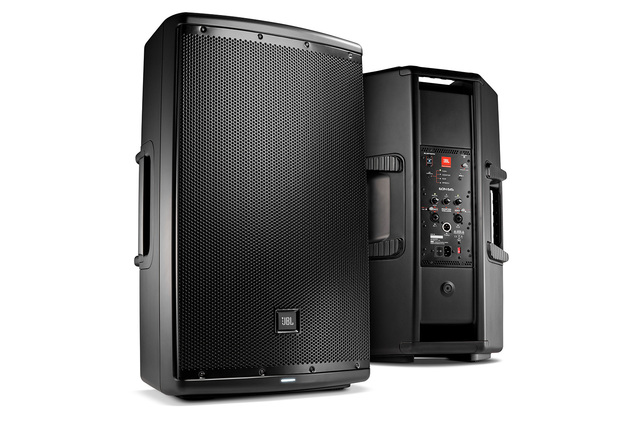

ΚΥΡΙΟ ΗΧΕΙΟ
JBL EON 615
Μία ενεργή μονάδα για καθαρή κάλυψη και ευέλικτη χρήση σε μικρότερες εγκαταστάσεις ή ως monitor.
- Ενεργό ηχείο 15 ιντσών
- Καθαρή αναπαραγωγή φωνής και μουσικής
- Ευέλικτη τοποθέτηση
ΕΠΑΓΓΕΛΜΑΤΙΚΟΣ ΗΧΟΣ
Επιλέγουμε τον κατάλληλο συνδυασμό για ομιλίες, μουσική και χορό. Τα μοντέλα παρουσιάζονται για διαφάνεια· η τελική πρόταση γίνεται βάσει του χώρου και του αριθμού καλεσμένων.

ΚΥΡΙΟ ΗΧΕΙΟ
Μία ενεργή μονάδα για καθαρή κάλυψη και ευέλικτη χρήση σε μικρότερες εγκαταστάσεις ή ως monitor.

FULL-RANGE
Ισχυρό και ευκρινές σύστημα για μουσική, ομιλίες και πίστα, με έμφαση στην ποιότητα σε όλο το φάσμα.

ΧΑΜΗΛΕΣ ΣΥΧΝΟΤΗΤΕΣ
Subwoofer για γεμάτο, ελεγχόμενο χαμηλό και την απαραίτητη ενέργεια στη χορευτική μουσική.

ΜΙΞΗ & ΕΛΕΓΧΟΣ
Κονσόλα για τη σωστή διαχείριση μουσικής, μικροφώνων και εξωτερικών πηγών κατά τη διάρκεια της εκδήλωσης.